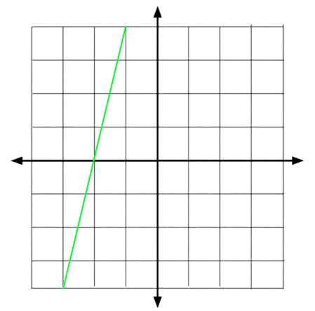

This is a linear equation...
A linear equation can also be a linear function which is shown as a straight line on a graph like this one...

A linear function can be expressed in many forms like slope-intercept form...
Or in point-slope form...
Or in Standard Form...
There are many forms of linear functions but all of them equate the same.
Slope-intercept form is the most common way of writing linear functions as it shows the slope and the y-intercept...
This form of linear functions shows the slope and as m the y-intercept as b. So for example...
In this example, the slope is -2, meaning that every time x increases by 1, y decreases by 2. And the y-intercept is 5, meaning that when x = 0, y = 5.
To convert slope-intercept to point-slope, first substitute a points coordinate into the point-slope form, take this function for example...
We can use (0, -5) for example as the y-intercept is 5. Then we can plug in these coordinates into the point-slope form itself...
Lastly, we'll substitute m as the slope of the function (which is 1/3)...
To convert slope-intercept form to standard form, first move x to the left alongside it's coefficent, for example...
Move 3/2x to the left by subtracting it on both sides...
This is the standard form for y = 3/2x - 2, optionally, you can multiply -2 on both sides and or add 2 on both sides...
The point-slope form is another form of a linear function as it is written like this...
Like this one for example...
Which can be simplified to...
The m represents the slope of the line, so the slope of this line is 2. The x1 and y1 are the coordinates of a point that lies on the line so for example for this linear function, (1, 5) lies on the line which can then be used for the values of both values, x1 = 1, y1 = 5...
To convert point-slope form to slope-intercept form, first plug in a point that lies on the line, so for example...
Lets say that (-2, 5) lies on the line, so we would plug in those values into the equation...
Then simplify...
Now lets add 3 on both sides to remove the -3 on the left...
So y - 5 = -1(x + 2) is y = -x + 3 in slope-intercept form.
To convert point-slope form to standard form, first subtract x on both sides, for example...
To start, lets simplify the equation...
Now lets add 8x on both sides to remove the -8x on the right...
Now we've converted this into Standard Form and we can even convert it to the general form Ax + By + C = 0
Standard Form is also another way how to express linear functions. However this form doesn't need the slope of a linear function...
Here are some examples...
To convert standard form to slope-intercept form, first isolate the y to the left, for example...
Lets move 10y on the left...
Now lets simplify the equation.
So 30x + 10y - 20 = 0 in standard form is y = -3x + 2 in slope-intercept form.
To convert standard form to point-slope form, we would first have to convert the linear function to slope-intercept form first, for example...
Lets convert this to slope-intercept form...
Now that we've converted it to slope-intercept, we can now convert it to point-slope form. From this we can see that the y-intercept is 3, so we can use (0, 3) as the point for the point-slope form...
We can also see that the slope is -4, so we can plug that in as well...
So this is the linear function in point-slope form, but we can simplify it even further...